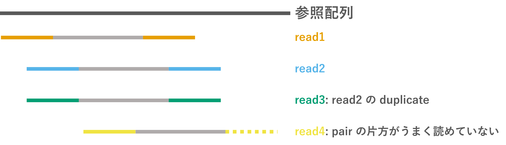

Part. 2 リードマッピング、バリアントコール
全ゲノム解析ハンズオン 2024 新村グループ
—スモールデータで理解する SNP 解析の流れ
Part. 2 リードマッピング、バリアントコール
目標
- 公開データを用いた SNP 解析ができるようになる。
- データの中身と解析の流れについて理解を深める。
コンテンツ
- 基本的なコマンドライン操作
- NGS 公開データの取得
- クオリティコントロール
- リードマッピング
- バリアントコール
- SNP アノテーション
参照配列にリードをマッピング (前準備)
- リードマッピング
- リードを参照配列の相同な位置に貼り付ける
-


前準備
大腸菌の参照配列をダウンロード
ダウンロードしたファイルは圧縮されている (.gz) ので解凍する:
参照配列にリードをマッピング (前準備)
ファイル名が長いので Ecoli.fa に変えておく (任意):
参照配列の中身を見てみる:
> で始まるヘッダー行と配列からなる FASTA というファイル形式。
Fastq と似ているけど別フォーマット。
より小さいデータを使ってリードマッピングを理解する
使うデータ (fastq と参照配列) が用意できたところで、 より小さなデータを使ってこれから扱うファイルの形式を先に理解しよう。
データ置き場: https://github.com/ymat2/md4rm
データをダウンロードする:
ディレクトリを移動して ls で中身を確認:
ref.fa: 参照配列。100bp。sra_1.fq,sra_2.fq: Paired-end のショートリード (もどき)。
ショートリードの詳細
sra_1.fq, sra_2.fq には以下の5本のリードがある。

less などで中身を見てみる:
リードマッピングの全体をまず眺める
## 参照配列のインデックスを作る
bwa index ref.fa
## ショートリードを参照配列へマッピングする
bwa mem ref.fa sra_1.fq sra_2.fq > small.sam
## SAM ファイルを処理する
samtools collate small.sam -o small.c.sam # リード名ソート
samtools fixmate -m small.c.sam small.cf.sam # MC, ms タグを付加
samtools sort small.cf.sam -o small.cfs.sam # 位置順ソート
samtools markdup small.cfs.sam small.cfsm.sam # PCR duplicates をマーク
## BAM ファイルへ圧縮する
samtools view -b small.cfsm.sam > small.bam
# 一般的には BAM への圧縮を最初にやる。(SAM のサイズが大きいので。)
# 今回はファイルの中身を見ながら進めるので最後に。参照配列のインデックス作成とリードマッピング
マッピングの結果はターミナルに出力されるので、 リダイレクト > して small.sam に書き込む。
- 「インデックスを作る📑」とは？
- 文字列検索を高速化するために参照配列を変換したファイルを生成する。 BWA では Burrows-Wheeler 変換というのを使うらしい。
Sequence Alignment Map (SAM) フォーマット
https://samtools.github.io/hts-specs/SAMv1.pdf
参照配列にマッピングされたリードの情報を記載するためのフォーマット
@SQ SN:NC_052532.1 LN:100
@PG ID:bwa PN:bwa VN:0.7.17-r1188 CL:bwa mem -I 90 ref.fa sra_1.fq sra_2.fq
read1 99 NC_052532.1 3 60 40M = 53 90 TCACCCATCTCGGAGTGCTCACACCATCCCCATGATCTTG AAAAAAAAA6AAA7AAAAABBAAA?A7<?AAA:>6::662 NM:i:1 MD:Z:13G26 MC:Z:40M AS:i:35 XS:i:0
read1 147 NC_052532.1 53 60 40M = 3 -90 ATCACCCCCATGTCCCCCGGATGCTCACAGCATCACCCAT 266::6>:AAA?<7A?AAABBAAAAA7AAA6AAAAAAAAA NM:i:0 MD:Z:40 MC:Z:40M AS:i:40 XS:i:0
read2 83 NC_052532.1 55 60 40M = 5 -90 CACCCCCATGTCCCCCGGATGCTCACAGCATCACCCATCT 266::6>:AAA?<7A?AAABBAAAAA7AAA6AAAAAAAAA NM:i:0 MD:Z:40 MC:Z:40M AS:i:40 XS:i:0
read2 163 NC_052532.1 5 60 40M = 55 90 ACCCATCTCGGAGTGCTCACACCATCCCCATGATCTTGGG AAAAAAAAA6AAA7AAAAABBAAA?A7<?AAA:>6::662 NM:i:1 MD:Z:11G28 MC:Z:40M AS:i:35 XS:i:0
︙@ で始まるヘッダー行と、1リード1行のデータからなる。
11 列以上で構成され、11列目まではツール共通、それ以降はマッピングツールによって異なる。
Sequence Alignment Map (SAM) フォーマット
QNAME: リード名FLAG: マッピング状況を表す数字RNAME: 参照配列の名前 (染色体、コンティグ等)POS: 位置MAPQ: マッピングクオリティ。\(-10 \times \log_{10}{\text{(誤マッピングの確率)}}\)。CIGAR: いくつの塩基がどう張り付いたかを示す文字列MRNM: Paired-end のもう片方が張り付いた染色体。一緒なら=。MPOS: Paired-end のもう片方の位置TLEN: Insert size (Paired-end の端から端までの長さ)SEQ: 配列QUAL: 配列のクオリティ
FLAG について (このあと出てくるので説明)
リードのマッピング状況を表す数字。Bit 表現の足し算。
例えば FLAG が 99 なら 64+32+2+1 で「正しくマッピングされた、ペアが逆鎖のread1」、 133 なら 128+4+1 で「マッピングされていないペアのread2」となる。
SAMtools を用いたファイル処理: collate, fixmate
samtools collate- リードの名前をシャッフルして同じリード名でグループ化する。
- BWA の出力がすでにこうなっているのでやらなくても OK。
samtools fixmate -m-
mate タグ (
MC,ms) というタグを付加する。 -
下流の
markdupの際にどのリードを残すかの基準となる。
🔰 small.sam と small.cf.sam を見比べて、 リードの順番の違いと、行の右端に MC/ms タグがあることを確認しよう。
SAMtools を用いたファイル処理: sort
samtools sort-
リードを位置順に (4列目の
POSに基づいて) 並び替える。
🔰 small.cf.sam と small.cfs.sam を見比べて、 リードの順番が4列目 POS の昇順になっていることを確認しよう。
SAMtools を用いたファイル処理: markdup
samtools markdup- Duplicates (同じ領域のリード) を重複リードとしてマークする。
🔰 small.cfs.sam と small.cfsm.sam とで read3 の2列目 FLAG の変化を比べよう。
read3 163 NC_052532.1 5 60 40M = 55 90 ACCCATCTCGGAGTGCTCACACCATCCCCATGATCTTGGG AAAAAAAAA6AAA7AAAAABBAAA?A7<?AAA:>6::662 NM:i:1 MD:Z:11G28 AS:i:35 XS:i:0 MQ:i:60 MC:Z:40M ms:i:1170
↓
read3 1187 NC_052532.1 5 60 40M = 55 90 ACCCATCTCGGAGTGCTCACACCATCCCCATGATCTTGGG AAAAAAAAA6AAA7AAAAABBAAA?A7<?AAA:>6::662 NM:i:1 MD:Z:11G28 AS:i:35 XS:i:0 MQ:i:60 MC:Z:40M ms:i:1170- 163 = 128 + 32 + 2 + 1
- 1187 = 1024 + 128 + 32 + 2 + 1
SAMtools を用いたファイル処理: markdup -r
samtools markdup -r- Duplicates (同じ領域のリード) を重複リードとしてマークして除く。
- なお、リードを除かなくてもマークさえしておけば、 この後のバリアントコールの時には使われないっぽい。
🔰 small.cfsm.sam から read3 が除かれたことを確認しよう。
BAM ファイルへの圧縮と閲覧
BAM は SAM をバイナリに圧縮したファイル形式。 バイナリファイルなのでそのままでは読めず、インデックスを作って閲覧する。
閲覧方法
- SAM として閲覧
- リードの貼りつき状況を視覚的に表示 (Q で閲覧画面を閉じる)
公開データを使ってリードマッピング
改めて先ほど取得した大腸菌のデータを使って、リードマッピングを行う。
cd .. # 元の snp24 ディレクトリへ移動
## インデックス作成とマッピング
bwa index Ecoli.fa
bwa mem Ecoli.fa qc_SRR030257_1.fq.gz qc_SRR030257_2.fq.gz > SRR030257.sam
## SAMtools による処理
samtools view -b SRR030257.sam > SRR030257.bam # 最初に BAM へ圧縮
samtools collate SRR030257.bam -o SRR030257.c.bam # リード名ソート
samtools fixmate -m SRR030257.c.bam SRR030257.cf.bam # MC, ms タグを付加
samtools sort SRR030257.cf.bam -o SRR030257.cfs.bam # 位置順ソート
samtools markdup SRR030257.cfs.bam SRR030257.cfsm.bam # PCR duplicates をマーク
samtools index SRR030257.cfsm.bam # インデックス作成🔰 samtools tview でリードのマッピング状況を可視化してみよう。 (矢印キー ←/→ で移動できる。)
samtools tview で眺めると変異らしき座位が見つかる

閲覧画面で / を押して Chromosome:161041 と打つとこの位置へジャンプ
SNP (T から G) ↑
アライメントから変異を特定する (=バリアントコール)
バリアントコールのお気持ち。例えば参照配列が A のある座位に対して、
- 100本のリードがマッピングされ、100本が
G -
この座位は
Gだろう。 - 100本のリードがマッピングされ、49本が
A、51本がG -
この座位は
A/Gのヘテロだろう。 - 100本のリードがマッピングされ、98本が
A、2本がG -
A/Gのヘテロである確率よりは、2本が誤っている確率が高そう。
シーケンスのエラー、誤った場所へのマッピングなど。 - 2本のリードがマッピングされ、1本が
A、1本がG -
割合的には
A/Gのヘテロだけど、本数が少ないので確実な変異とは言えない。
BCFtools によるバリアントコール
bcftools mpileup- 1座位ごとに遺伝子型尤度を計算して VCF/BCF を生成する。
bcftools call-
mpileupで出力した遺伝子型尤度に基づいて遺伝子型を決定する。 -
-c: biallelic コール (REF/ALT)。-mにすると multi-allelic コール (REF/ALT1/ALT2…)。 -
-v: 変異がある座位のみを出力する。 -
--ploidy N: 一倍体か二倍体か。デフォルトは二倍体。
VCF (Variant Call Format)
https://samtools.github.io/hts-specs/VCFv4.2.pdf
バリアントコールした変異の情報を記述するフォーマット。 BCF は VCF をバイナリ化したもの。
##fileformat=VCFv4.2
##FILTER=<ID=PASS,Description="All filters passed">
##bcftoolsVersion=1.13+htslib-1.13+ds
︙
#CHROM POS ID REF ALT QUAL FILTER INFO FORMAT SRR030257.cfsm.bam
Chromosome 161041 . T G 225.007 . DP=55;VDB=0.000910305;SGB=-0.693147;MQSBZ=1.32288;FS=0;MQ0F=0;AF1=1;AC1=1;DP4=0,0,20,35;MQ=60;FQ=-999 GT:PL 1:255,0
Chromosome 380188 . A C 225.007 . DP=42;VDB=0.701392;SGB=-0.693146;MQSBZ=-0.595683;FS=0;MQ0F=0;AF1=1;AC1=1;DP4=0,0,11,31;MQ=60;FQ=-999 GT:PL 1:255,0
︙## で始まるヘッダー行と、1座位1行のデータ行からなる。
8列目までは共通、10列目以降は各サンプルの列。
VCF (Variant Call Format)
#CHROM: 染色体やコンティグの名前POS: 染色体上の位置ID: SNP に名前がついている場合がある。(例: rs247)REF: 参照配列の塩基 (配列)ALT: 変異の塩基 (配列)QUAL: クオリティ。\(-10 \times \log_{10}{\text{(変異が間違いである確率)}}\)FILTER: フィルターを通過したかどうか (PASS)INFO:;区切りの追加情報。たいていヘッダー行に説明が書いてある。##INFO=<ID=DP,Number=1,Type=Integer,Description="Raw read depth">FORMAT: 10列目以降の各サンプル列に何が書いてあるか。
FORMAT フィールドの読み方
sampleA以降の列にはGTとPLの情報が:区切りで書いてある。sampleAのGTは0/1、PLは139,0,112。sampleBのGTは1/1、PLは245,27,0。
GT(genotype)-
遺伝子型。
/もしくは|区切りで、0/0ならREF/REF(参照配列のホモ)、0/1ならREF/ALT(ヘテロ)、1/1ならALT/ALT(変異のホモ) のように読む。 PL(phred-scaled genotype likelihood)-
遺伝子型ごとの尤度。
,区切りでREF/REF,REF/ALT,ALT/ALTの順にスコアリングされており、 数字が小さいほど尤もらしい。
SRR030257.vcf を見てみる
## ヘッダー省略
#CHROM POS ID REF ALT QUAL FILTER FORMAT SRR030257.cfsm.bam
Chromosome 161041 . T G 225.007 . DP=55;VDB=0.000910305;SGB=-0.693147;MQSBZ=1.32288;FS=0;MQ0F=0;AF1=1;AC1=1;DP4=0,0,20,35;MQ=60;FQ=-999 GT:PL 1:255,0
Chromosome 380188 . A C 225.007 . DP=42;VDB=0.701392;SGB=-0.693146;MQSBZ=-0.595683;FS=0;MQ0F=0;AF1=1;AC1=1;DP4=0,0,11,31;MQ=60;FQ=-999 GT:PL 1:255,0
Chromosome 430835 . C T 225.007 . DP=72;VDB=0.0514064;SGB=-0.693147;RPBZ=-4.55905;MQBZ=5.72838;MQSBZ=-2.34454;BQBZ=-1.62502;SCBZ=-1.61283;FS=0;MQ0F=0.208333;AF1=1;AC1=1;DP4=1,13,31,27;MQ=46;FQ=-999;PV4=0.0020037,0.174994,1,1 GT:PL 1:255,0
Chromosome 475288 . CGGGG CGGGGG 217.469 . INDEL;IDV=34;IMF=0.772727;DP=44;VDB=0.0585699;SGB=-0.693132;RPBZ=-1.90593;MQBZ=-1.12363;MQSBZ=2.23545;SCBZ=-3.81819;FS=0;MQ0F=0;AF1=1;AC1=1;DP4=3,1,14,20;MQ=60;FQ=-999;PV4=0.30678,1,0.282827,1 GT:PL 1:255,65,0
Chromosome 649391 . T A 225.007 . DP=60;VDB=0.100294;SGB=-0.693147;MQSBZ=-0.0713471;FS=0;MQ0F=0;AF1=1;AC1=1;DP4=0,0,31,29;MQ=60;FQ=-999 GT:PL 1:255,0
︙
Chromosome 1286699 . C A 225.007 . DP=53;VDB=0.327747;SGB=-0.693147;MQSBZ=2.54111;FS=0;MQ0F=0;AF1=1;AC1=1;DP4=0,0,21,32;MQ=59;FQ=-999 GT:PL 1:255,0
Chromosome 1329516 . C T 225.007 . DP=50;VDB=0.0979545;SGB=-0.693147;MQSBZ=2.05363;FS=0;MQ0F=0;AF1=1;AC1=1;DP4=0,0,18,31;MQ=59;FQ=-999 GT:PL 1:255,0
Chromosome 1976879 . T G 225.007 . DP=48;VDB=0.218639;SGB=-0.693147;MQSBZ=-1.29099;FS=0;MQ0F=0;AF1=1;AC1=1;DP4=0,0,30,18;MQ=60;FQ=-999 GT:PL 1:255,0
Chromosome 2031736 . A G 18.0728 . DP=5;VDB=0.0672958;SGB=-0.590765;FS=0;MQ0F=0.2;AF1=1;AC1=1;DP4=0,0,0,5;MQ=19;FQ=-999 GT:PL 1:48,0
Chromosome 2054876 . A G 119.006 . DP=18;VDB=0.155125;SGB=-0.691153;FS=0;MQ0F=0;AF1=1;AC1=1;DP4=0,0,18,0;MQ=31;FQ=-999 GT:PL 1:149,0クオリティがよろしくない変異もある
## ヘッダー省略
#CHROM POS ID REF ALT QUAL FILTER FORMAT SRR030257.cfsm.bam
Chromosome 161041 . T G 225.007 . DP=55;VDB=0.000910305;SGB=-0.693147;MQSBZ=1.32288;FS=0;MQ0F=0;AF1=1;AC1=1;DP4=0,0,20,35;MQ=60;FQ=-999 GT:PL 1:255,0
Chromosome 380188 . A C 225.007 . DP=42;VDB=0.701392;SGB=-0.693146;MQSBZ=-0.595683;FS=0;MQ0F=0;AF1=1;AC1=1;DP4=0,0,11,31;MQ=60;FQ=-999 GT:PL 1:255,0
Chromosome 430835 . C T 225.007 . DP=72;VDB=0.0514064;SGB=-0.693147;RPBZ=-4.55905;MQBZ=5.72838;MQSBZ=-2.34454;BQBZ=-1.62502;SCBZ=-1.61283;FS=0;MQ0F=0.208333;AF1=1;AC1=1;DP4=1,13,31,27;MQ=46;FQ=-999;PV4=0.0020037,0.174994,1,1 GT:PL 1:255,0
Chromosome 475288 . CGGGG CGGGGG 217.469 . INDEL;IDV=34;IMF=0.772727;DP=44;VDB=0.0585699;SGB=-0.693132;RPBZ=-1.90593;MQBZ=-1.12363;MQSBZ=2.23545;SCBZ=-3.81819;FS=0;MQ0F=0;AF1=1;AC1=1;DP4=3,1,14,20;MQ=60;FQ=-999;PV4=0.30678,1,0.282827,1 GT:PL 1:255,65,0
Chromosome 649391 . T A 225.007 . DP=60;VDB=0.100294;SGB=-0.693147;MQSBZ=-0.0713471;FS=0;MQ0F=0;AF1=1;AC1=1;DP4=0,0,31,29;MQ=60;FQ=-999 GT:PL 1:255,0
︙
Chromosome 1286699 . C A 225.007 . DP=53;VDB=0.327747;SGB=-0.693147;MQSBZ=2.54111;FS=0;MQ0F=0;AF1=1;AC1=1;DP4=0,0,21,32;MQ=59;FQ=-999 GT:PL 1:255,0
Chromosome 1329516 . C T 225.007 . DP=50;VDB=0.0979545;SGB=-0.693147;MQSBZ=2.05363;FS=0;MQ0F=0;AF1=1;AC1=1;DP4=0,0,18,31;MQ=59;FQ=-999 GT:PL 1:255,0
Chromosome 1976879 . T G 225.007 . DP=48;VDB=0.218639;SGB=-0.693147;MQSBZ=-1.29099;FS=0;MQ0F=0;AF1=1;AC1=1;DP4=0,0,30,18;MQ=60;FQ=-999 GT:PL 1:255,0
Chromosome 2031736 . A G 18.0728 . DP=5;VDB=0.0672958;SGB=-0.590765;FS=0;MQ0F=0.2;AF1=1;AC1=1;DP4=0,0,0,5;MQ=19;FQ=-999 GT:PL 1:48,0
Chromosome 2054876 . A G 119.006 . DP=18;VDB=0.155125;SGB=-0.691153;FS=0;MQ0F=0;AF1=1;AC1=1;DP4=0,0,18,0;MQ=31;FQ=-999 GT:PL 1:149,0高品質な変異をフィルタリングする
https://samtools.github.io/bcftools/howtos/filtering.html
-i(or-e)-
条件を満たす変異を残す
-i(or 除外する-e) "QUAL>20 && INFO/DP>10"-
QUALフィールドの値が20より大きい、かつ (&&)INFOフィールドのDPが10より大きい。 - ほかにもいろいろ指定可能
🔰 条件を変えて bcftools filter してみよう。
🔰 SRR030257.vcf と hq_SRR030257.vcf を比べて意図した通りできているか確認しよう。
Part. 2 まとめ
達成🎉
参考
Tips 1. パイプ | によるファイル出力の省略
パイプ | は | の前のコマンドの標準出力を | の後のコマンドの標準入力へ渡す仕組み。
使い方:

bcftools mpileup の出力 (SRR030257.mpileup) を bcftools call の入力として直接使う。
Tips 2. apptainer イメージの使用
https://sc.ddbj.nig.ac.jp/software/BioContainers/
Apptainer はユーザが解析ソフトウェアをインストール不要で使える仕組み。
「使いたいコマンドが遺伝研スパコンにない！」ときや「違うバージョンのソフトが使いたい！」ときに便利。